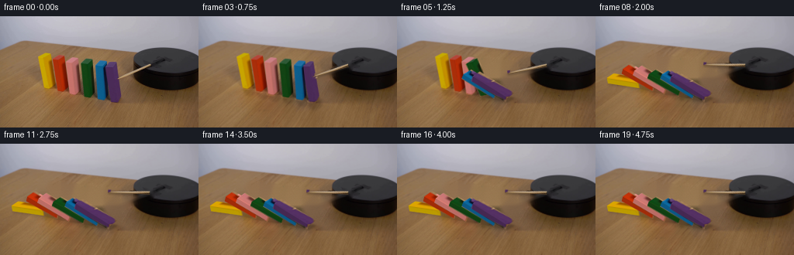
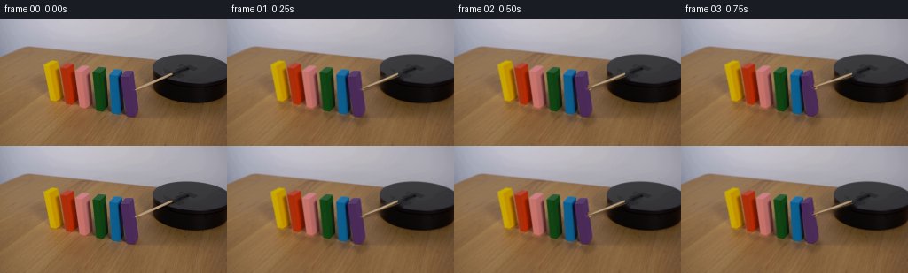

CODING AGENTS AS PIXEL WORLD MODELS
traex/GPT-6.1-Sol · 0036
点击播放 · 原生 RGB 像素
逐轮保存的候选
回放视频、检查图与代码变化。
每份候选均可单独播放。实际图片检查记录在下方工具轨迹中。
候选 01播放与检查图
点击播放 · 原生 RGB 像素

展开代码变化
--- 上一保存版本
+++ 本次保存版本
@@ -0,0 +1,186 @@
+from pathlib import Path
+import math
+import numpy as np
+import cv2
+from PIL import Image
+import artifact_io
+
+ROOT = Path(__file__).resolve().parent
+S=4
+W,H=256,144
+orig=np.asarray(Image.open(ROOT/'first_frame.png').convert('RGB'))
+# Reconstruct the six painted wooden pieces from their photographed faces.
+# Coordinates: front lower corner, short edge, depth edge, vertical edge.
+blocks=[
+ ((57.,93.),(7.,1.),(9.,-6.),(-8.,-40.)),
+ ((74.,97.),(7.,1.5),(10.,-7.),(-6.,-40.5)),
+ ((89.,101.),(7.,1.5),(10.,-7.),(-5.,-42.)),
+ ((107.,104.),(7.,1.2),(10.,-6.5),(-4.,-42.)),
+ ((125.,107.),(7.,1.5),(10.,-6.),(-3.,-44.)),
+ ((140.,111.),(7.,1.5),(9.,-6.),(-3.,-47.)),
+]
+blocks=[tuple(np.array(v,dtype=float) for v in b) for b in blocks]
+faces=[(0,1,5,4),(1,3,7,5),(4,5,7,6)]
+
+def verts(b,angle):
+ base,u,v,z=b
+ c,s=np.cos(angle),np.sin(angle)
+ # Each domino rotates about its lower left edge, on the table.
+ r=u/7.
+ zh=z/np.linalg.norm(z)
+ height=np.linalg.norm(z)
+ points=[]; floor=[]; elev=[]
+ for h in (0.,height):
+ for yy,xx in ((0.,0.),(0.,7.),(1.,0.),(1.,7.)):
+ X=xx*c-h*s; Z=xx*s+h*c
+ ground=base+r*X+v*yy
+ points.append(ground+zh*Z)
+ floor.append(ground)
+ elev.append(Z)
+ return np.asarray(points),np.asarray(floor),np.asarray(elev)
+
+src_vertices=[verts(b,0)[0].astype(np.float32) for b in blocks]
+source_masks=[]
+for vv in src_vertices:
+ mask=np.zeros((H*S,W*S),np.uint8)
+ hull=cv2.convexHull((vv*S).astype(np.float32)).astype(np.int32)
+ cv2.fillConvexPoly(mask,hull,255)
+ mask=cv2.resize(mask,(W,H),interpolation=cv2.INTER_AREA)
+ # Include the photographic antialiasing at the edges.
+ mask=cv2.dilate(mask,np.ones((3,3),np.uint8))
+ source_masks.append(mask)
+block_mask=np.maximum.reduce(source_masks)
+
+pivot=np.array([193.,63.])
+tip0=np.array([149.8,79.])
+rod_mask=np.zeros((H,W),np.uint8)
+cv2.line(rod_mask,tuple(np.rint(tip0).astype(int)),tuple(pivot.astype(int)),255,7,cv2.LINE_AA)
+# The rod's small cast shadow is removed together with the original rod.
+cv2.line(rod_mask,(152,82),(196,66),255,5,cv2.LINE_AA)
+# Keep the upright pieces intact until the wave reaches them.
+rod_mask[block_mask>0]=0
+mask=np.maximum(block_mask,rod_mask)
+plate=cv2.inpaint(orig,mask,5,cv2.INPAINT_TELEA)
+# A tiny amount of actual fine table grain prevents over-smooth filled areas.
+texture=orig.astype(float)-cv2.GaussianBlur(orig.astype(float),(0,0),1.1)
+for y in range(45,115):
+ for x in range(47,160):
+ if block_mask[y,x]>0:
+ noise=texture[y,16+(x*7)%27]
+ plate[y,x]=np.clip(plate[y,x].astype(float)+noise*.55,0,255)
+
+# Leave the original setup absolutely unchanged until the stick moves.
+# The clean photograph is used underneath the dynamic textured surfaces.
+plate_hi=cv2.resize(plate,(W*S,H*S),interpolation=cv2.INTER_CUBIC).astype(float)
+orig_hi=cv2.resize(orig,(W*S,H*S),interpolation=cv2.INTER_CUBIC).astype(float)
+static_alpha=[cv2.resize(m.astype(float)/255,(W*S,H*S),interpolation=cv2.INTER_LINEAR) for m in source_masks]
+
+# Extract the genuine wood grain along the stick.
+axis=(tip0-pivot);axis/=np.linalg.norm(axis)
+n=np.array([-axis[1],axis[0]])
+rod_src=np.array([pivot-n*1.6,tip0-n*1.6,tip0+n*1.6,pivot+n*1.6],np.float32)
+
+
+def composite_face(canvas,src,dst,brightness=1.):
+ if abs(cv2.contourArea(dst.astype(np.float32)))<.04:return
+ transform=cv2.getPerspectiveTransform(src.astype(np.float32), (dst*S).astype(np.float32))
+ tex=cv2.warpPerspective(orig,transform,(W*S,H*S),flags=cv2.INTER_CUBIC,borderMode=cv2.BORDER_REPLICATE).astype(float)
+ if brightness!=1.:tex=np.clip(tex*brightness,0,255)
+ m=np.zeros((H*S,W*S),np.uint8)
+ cv2.fillConvexPoly(m,np.rint(dst*S).astype(np.int32),255,lineType=cv2.LINE_AA)
+ alpha=m.astype(float)/255
+ canvas[:]=canvas*(1-alpha[...,None])+tex*alpha[...,None]
+
+
+def angle_at(i,t):
+ hit=.72+(5-i)*.17
+ age=t-hit
+ if age<=0:return 0.
+ finals=[math.pi/2,math.atan(18/7),math.acos(7/18),math.acos(7/18),math.acos(7/18),math.acos(7/18)]
+ end=finals[i]
+ fall=.23*math.expm1(5.0*age)
+ when=math.log1p(end/.23)/5
+ if age<=when:return min(end,fall)
+ after=age-when
+ # One small damped contact rebound, then complete mechanical rest.
+ return end-.032*math.exp(-11*after)*max(0.,math.sin(24*after))
+
+
+def stick_at(t):
+ delta=.71*min(t/1.95,1.)**2
+ c,s=math.cos(delta),math.sin(delta)
+ # Horizontal rotation, with the camera's foreshortening of the tabletop.
+ vec=np.array([-43.2*c-32*s,(-43.2*s+32*c)*.5])
+ tip=pivot+vec
+ direct=tip-pivot;direct/=np.linalg.norm(direct)
+ normal=np.array([-direct[1],direct[0]])
+ quad=np.array([pivot-normal*1.6,tip-normal*1.6,tip+normal*1.6,pivot+normal*1.6])
+ return quad,tip
+
+
+def render(t):
+ canvas=plate_hi.copy()
+ angles=[angle_at(i,t) for i in range(6)]
+ # Soft ground shadows, distinct from the textured painted faces.
+ shadows=np.zeros((H*S,W*S),np.float32)
+ contacts=np.zeros_like(shadows)
+ for i,b in enumerate(blocks):
+ pp,floor,z=verts(b,angles[i])
+ # A directionally consistent diffuse cast shadow.
+ shadow=floor+z[:,None]*np.array([.11,.21])
+ hull=cv2.convexHull((shadow*S).astype(np.float32)).astype(np.int32)
+ layer=np.zeros_like(shadows)
+ cv2.fillConvexPoly(layer,hull,1.)
+ shadows=np.maximum(shadows,cv2.GaussianBlur(layer,(0,0),1.8*S))
+ ground_hull=cv2.convexHull((floor*S).astype(np.float32)).astype(np.int32)
+ layer[:]=0
+ cv2.fillConvexPoly(layer,ground_hull,1.)
+ contacts=np.maximum(contacts,cv2.GaussianBlur(layer,(0,0),.7*S))
+ shade=np.clip(.15*shadows+.11*contacts,0,.25)
+ canvas*=1-shade[...,None]
+ for i,b in enumerate(blocks):
+ a=angles[i]
+ if a==0:
+ alpha=static_alpha[i]
+ canvas=canvas*(1-alpha[...,None])+orig_hi*alpha[...,None]
+ else:
+ dst=verts(b,a)[0]
+ # The narrow front, broad painted side, and (while visible) top.
+ composite_face(canvas,src_vertices[i][list(faces[0])],dst[list(faces[0])],1.-.06*math.sin(a))
+ composite_face(canvas,src_vertices[i][list(faces[1])],dst[list(faces[1])],1.+.14*math.sin(a))
+ if a<1.12:
+ composite_face(canvas,src_vertices[i][list(faces[2])],dst[list(faces[2])],1.-.1*math.sin(a))
+ quad,tip=stick_at(t)
+ # Shallow shadow under the elevated rotating stick.
+ sm=np.zeros((H*S,W*S),np.float32)
+ cv2.line(sm,tuple(np.rint((pivot+[1,3])*S).astype(int)),tuple(np.rint((tip+[1,3])*S).astype(int)),1.,3*S,cv2.LINE_AA)
+ sm=cv2.GaussianBlur(sm,(0,0),1.1*S)
+ # Do not cast that shadow over foreground domino faces.
+ rod_shade=.20*sm
+ foreground=np.zeros_like(sm)
+ for i,b in enumerate(blocks):
+ vv=verts(b,angles[i])[0]
+ hull=cv2.convexHull((vv*S).astype(np.float32)).astype(np.int32)
+ cv2.fillConvexPoly(foreground,hull,1.)
+ rod_shade*=1-foreground
+ canvas*=1-rod_shade[...,None]
+ # Subtle lower rim and the photograph's detailed upper wood surface.
+ rim=np.zeros((H*S,W*S),np.uint8)
+ cv2.fillConvexPoly(rim,np.rint((quad+[0,.65])*S).astype(np.int32),255,cv2.LINE_AA)
+ ma=rim.astype(float)/255
+ canvas=canvas*(1-ma[...,None])+np.array([105.,77.,45.])*ma[...,None]
+ composite_face(canvas,rod_src,quad)
+ # The fixed fastening at the black platform is never detached.
+ cv2.circle(canvas,tuple(np.rint(pivot*S).astype(int)),int(.65*S),(53.,47.,35.),-1,cv2.LINE_AA)
+ return np.clip(cv2.resize(canvas,(W,H),interpolation=cv2.INTER_AREA),0,255).astype(np.uint8)
+
+
+def main():
+ frames=np.stack([orig.copy()]+[render(i/4) for i in range(1,20)])
+ assert np.array_equal(frames[0],orig)
+ (ROOT/'.tmp').mkdir(exist_ok=True)
+ Image.fromarray(plate).save(ROOT/'.tmp'/'clean_plate.png')
+ np.save(ROOT/'.tmp'/'candidate.npy',frames)
+ artifact_io.save(frames,ROOT)
+
+if __name__=='__main__':main()
候选 02播放与检查图
点击播放 · 原生 RGB 像素


展开代码变化
--- 上一保存版本
+++ 本次保存版本
@@ -61,6 +61,26 @@
rod_mask[block_mask>0]=0
mask=np.maximum(block_mask,rod_mask)
plate=cv2.inpaint(orig,mask,5,cv2.INPAINT_TELEA)
+norod=cv2.inpaint(orig,rod_mask,4,cv2.INPAINT_TELEA)
+old_shadow_masks=[]
+for b in blocks:
+ base=b[0]
+ sm=np.zeros((H,W),np.uint8)
+ polygon=np.array([base+[-10,-7],base+[16,-7],base+[27,6],base+[19,15],base+[-11,12]])
+ cv2.fillConvexPoly(sm,np.rint(polygon).astype(np.int32),255,cv2.LINE_AA)
+ old_shadow_masks.append(sm)
+table_mask=np.maximum(block_mask,np.maximum.reduce(old_shadow_masks))
+# Interpolate tabletop grain horizontally, avoiding painted color spill and
+# the old colored contact shadows when those pieces have fallen.
+for y in range(45,126):
+ valid=(table_mask[y,:169]==0)&(rod_mask[y,:169]==0)
+ valid &= (orig[y,:169,0].astype(int)-orig[y,:169,1].astype(int)>12)
+ valid &= (orig[y,:169,1].astype(int)-orig[y,:169,2].astype(int)>12)
+ xx=np.flatnonzero(valid)
+ missing=np.flatnonzero(table_mask[y,:169]>0)
+ if len(xx)>4:
+ for c in range(3):
+ plate[y,missing,c]=np.clip(np.interp(missing,xx,orig[y,xx,c]),0,255).astype(np.uint8)
# A tiny amount of actual fine table grain prevents over-smooth filled areas.
texture=orig.astype(float)-cv2.GaussianBlur(orig.astype(float),(0,0),1.1)
for y in range(45,115):
@@ -73,12 +93,14 @@
# The clean photograph is used underneath the dynamic textured surfaces.
plate_hi=cv2.resize(plate,(W*S,H*S),interpolation=cv2.INTER_CUBIC).astype(float)
orig_hi=cv2.resize(orig,(W*S,H*S),interpolation=cv2.INTER_CUBIC).astype(float)
+norod_hi=cv2.resize(norod,(W*S,H*S),interpolation=cv2.INTER_CUBIC).astype(float)
static_alpha=[cv2.resize(m.astype(float)/255,(W*S,H*S),interpolation=cv2.INTER_LINEAR) for m in source_masks]
# Extract the genuine wood grain along the stick.
axis=(tip0-pivot);axis/=np.linalg.norm(axis)
n=np.array([-axis[1],axis[0]])
-rod_src=np.array([pivot-n*1.6,tip0-n*1.6,tip0+n*1.6,pivot+n*1.6],np.float32)
+texture_tip=pivot+axis*40.4
+rod_src=np.array([pivot-n*1.3,texture_tip-n*1.3,texture_tip+n*1.3,pivot+n*1.3],np.float32)
def composite_face(canvas,src,dst,brightness=1.):
@@ -96,7 +118,7 @@
hit=.72+(5-i)*.17
age=t-hit
if age<=0:return 0.
- finals=[math.pi/2,math.atan(18/7),math.acos(7/18),math.acos(7/18),math.acos(7/18),math.acos(7/18)]
+ finals=np.radians([90.,81.4,77.,73.8,71.,68.8])
end=finals[i]
fall=.23*math.expm1(5.0*age)
when=math.log1p(end/.23)/5
@@ -119,12 +141,25 @@
def render(t):
- canvas=plate_hi.copy()
+ canvas=norod_hi.copy()
angles=[angle_at(i,t) for i in range(6)]
+ static=np.zeros((H,W),np.uint8)
+ for i,a in enumerate(angles):
+ if a==0:static=np.maximum(static,source_masks[i])
+ erase=np.zeros((H,W),np.uint8)
+ for i,a in enumerate(angles):
+ if a>0:
+ erase=np.maximum(erase,np.maximum(source_masks[i],old_shadow_masks[i]))
+ erase[static>0]=0
+ erase_hi=cv2.resize(erase.astype(float)/255,(W*S,H*S),interpolation=cv2.INTER_LINEAR)
+ canvas=canvas*(1-erase_hi[...,None])+plate_hi*erase_hi[...,None]
+ affected=np.maximum(erase,rod_mask)
+ static_hi=cv2.resize(static.astype(float)/255,(W*S,H*S),interpolation=cv2.INTER_LINEAR)
# Soft ground shadows, distinct from the textured painted faces.
shadows=np.zeros((H*S,W*S),np.float32)
contacts=np.zeros_like(shadows)
for i,b in enumerate(blocks):
+ if angles[i]==0:continue
pp,floor,z=verts(b,angles[i])
# A directionally consistent diffuse cast shadow.
shadow=floor+z[:,None]*np.array([.11,.21])
@@ -137,14 +172,16 @@
cv2.fillConvexPoly(layer,ground_hull,1.)
contacts=np.maximum(contacts,cv2.GaussianBlur(layer,(0,0),.7*S))
shade=np.clip(.15*shadows+.11*contacts,0,.25)
+ shade*=1-static_hi
+ affected=np.maximum(affected,cv2.resize((shade>.001).astype(np.uint8)*255,(W,H),interpolation=cv2.INTER_AREA))
canvas*=1-shade[...,None]
for i,b in enumerate(blocks):
a=angles[i]
if a==0:
- alpha=static_alpha[i]
- canvas=canvas*(1-alpha[...,None])+orig_hi*alpha[...,None]
+ continue
else:
dst=verts(b,a)[0]
+ cv2.fillConvexPoly(affected,cv2.convexHull(dst.astype(np.float32)).astype(np.int32),255,cv2.LINE_AA)
# The narrow front, broad painted side, and (while visible) top.
composite_face(canvas,src_vertices[i][list(faces[0])],dst[list(faces[0])],1.-.06*math.sin(a))
composite_face(canvas,src_vertices[i][list(faces[1])],dst[list(faces[1])],1.+.14*math.sin(a))
@@ -163,16 +200,21 @@
hull=cv2.convexHull((vv*S).astype(np.float32)).astype(np.int32)
cv2.fillConvexPoly(foreground,hull,1.)
rod_shade*=1-foreground
+ affected=np.maximum(affected,cv2.resize((rod_shade>.001).astype(np.uint8)*255,(W,H),interpolation=cv2.INTER_AREA))
canvas*=1-rod_shade[...,None]
# Subtle lower rim and the photograph's detailed upper wood surface.
rim=np.zeros((H*S,W*S),np.uint8)
cv2.fillConvexPoly(rim,np.rint((quad+[0,.65])*S).astype(np.int32),255,cv2.LINE_AA)
ma=rim.astype(float)/255
+ affected=np.maximum(affected,cv2.resize(rim,(W,H),interpolation=cv2.INTER_AREA))
canvas=canvas*(1-ma[...,None])+np.array([105.,77.,45.])*ma[...,None]
composite_face(canvas,rod_src,quad)
# The fixed fastening at the black platform is never detached.
cv2.circle(canvas,tuple(np.rint(pivot*S).astype(int)),int(.65*S),(53.,47.,35.),-1,cv2.LINE_AA)
- return np.clip(cv2.resize(canvas,(W,H),interpolation=cv2.INTER_AREA),0,255).astype(np.uint8)
+ result=np.clip(cv2.resize(canvas,(W,H),interpolation=cv2.INTER_AREA),0,255).astype(np.uint8)
+ affected=cv2.dilate(affected,np.ones((3,3),np.uint8))
+ result[affected==0]=orig[affected==0]
+ return result
def main():
候选 03播放与检查图
可观测工具轨迹
实际执行的命令与返回图片。
命令 1exit 0
/bin/bash -lc 'ls -la && cat prompt.txt && cat GENERATION_RULES.md'
命令 2exit 0
/bin/bash -lc "cat artifact_io.py && python - <<'PY'
from PIL import Image
import numpy as np
im=Image.open('first_frame.png');print(im.size)
a=np.array(im);print(a.shape)
# block-average colors encoded as hue and luminance
im=im.resize((85,48));a=np.array(im).astype(float)
for row in a:
s=''
for r,g,b in row:
mx=max(r,g,b);mn=min(r,g,b)
if mx-mn<18:
s+= ' ' if mx>225 else '.' if mx>180 else ':' if mx>130 else '+' if mx>80 else '#' if mx>40 else '@'
elif r>g*1.25 and r>b*1.3:s+='R'
elif g>r*1.17 and g>b*1.1:s+='G'
elif b>r*1.15 and b>g*1.1:s+='B'
elif r>b*1.4 and g>b*1.3:s+='y' if r>180 else 'o'
elif r>g*1.15 and b>g*1.12:s+='M'
else:s+='~'
print(s)
PY"命令 3exit 0
/bin/bash -lc "python - <<'PY'
from PIL import Image
import numpy as np
from scipy.cluster.vq import kmeans2
im=np.array(Image.open('first_frame.png'))
a=im[35:116].reshape(-1,3).astype(float)
c,l=kmeans2(a,24,minit='++',seed=2)
print('palette')
letters='0123456789abcdefghijklmn'
for i,col in enumerate(c):print(letters[i],np.round(col).astype(int))
small=np.asarray(Image.fromarray(im).resize((128,72))).astype(float)
ll=((small[:,:,None,:]-c[None,None,:,:])**2).sum(3).argmin(2)
for y in range(16,59):print(f'{y*2:3} '+''.join(letters[i] for i in ll[y]))
print('samples')
for y in [45,55,65,75,85,95,105]:
print(y,' '.join(f'{x}:{im[y,x].tolist()}' for x in range(40,171,5)))
PY"命令 4exit 0
/bin/bash -lc "python - <<'PY'
import numpy as np
from PIL import Image
from scipy.cluster.vq import kmeans2
im=np.array(Image.open('first_frame.png'));a=im[35:116].reshape(-1,3).astype(float);c,_=kmeans2(a,20,minit='++',seed=3)
letters='0123456789abcdefghij'
for i,col in enumerate(c):print(letters[i],np.round(col).astype(int))
ll=((im.astype(float)[:,:,None,:]-c[None,None,:,:])**2).sum(3).argmin(2)
print('STICK / PLATFORM')
print(' '+''.join(str(x//10%10) for x in range(145,231)))
print(' '+''.join(str(x%10) for x in range(145,231)))
for y in range(48,87):print(f'{y:3} '+''.join(letters[i] for i in ll[y,145:231]))
print('BLOCKS')
print(' '+''.join(str(x//10%10) for x in range(45,158)))
print(' '+''.join(str(x%10) for x in range(45,158)))
for y in range(46,114,2):print(f'{y:3} '+''.join(letters[i] for i in ll[y,45:158]))
PY"命令 5exit 0
/bin/bash -lc "python - <<'PY'
import numpy as np
from PIL import Image
im=np.array(Image.open('first_frame.png'))
for y in range(54,73):
print(y,[(x,im[y,x].tolist()) for x in range(184,215) if (im[y,x,0]>90 or max(im[y,x])-min(im[y,x])>15)])
# pixel semantic classes full objects
for y in range(45,114):
s=''
for x in range(45,157):
r,g,b=map(int,im[y,x]);mx=max(r,g,b)
if r>160 and g>120 and b<35:v='Y'
elif r>130 and g<85 and b<60:v='O'
elif r>140 and g<145 and b>75 and r-g>45 and r-b>40:v='P'
elif g>r*1.3 and g>b*1.4 and g>40:v='G'
elif b>r*2 and b>g*1.2 and b>65:v='B'
elif b>r*.98 and b>g*1.3 and b>65:v='V'
elif mx<50:v='#'
elif mx<95:v='d'
else:v='.'
s+=v
print('%3d'%y,s)
PY"命令 6exit 0
/bin/bash -lc "python - <<'PY'
from PIL import Image
import numpy as np
im=np.array(Image.open('first_frame.png')).astype(int)
# classification per x extent connected-component and color landmarks
from scipy.ndimage import label
r,g,b=im.transpose(2,0,1)
sel=[(r>165)&(g>118)&(b<45), (r>135)&(g<85)&(b<60), (r>140)&(g>75)&(b>65)&(r-g>45)&(r-b>40), (g>r*1.3)&(g>b*1.4)&(g>40), (b>r*2)&(b>g*1.2)&(b>65), (b>r*.98)&(b>g*1.3)&(b>65)]
for k,m in enumerate(sel):
L,n=label(m);id=np.argmax(np.bincount(L.ravel())[1:])+1;m=L==id
print('\\n',k)
for y in range(np.where(m)[0].min(),np.where(m)[0].max()+1,3):
xs=np.where(m[y])[0];print(y,(xs.min(),xs.max()) if len(xs) else None)
PY"命令 7exit 0
/bin/bash -lc "python - <<'PY'
import numpy as np
from PIL import Image
im=np.array(Image.open('first_frame.png'))
for y in [48,50,52,54,56,58,60,65,70,75,80,85,90,92,94]:
print('y',y, ' '.join('%d:%s'%(x,tuple(im[y,x])) for x in range(47,74)))
PY"命令 8exit 0
/bin/bash -lc "python - <<'PY' import cv2, scipy, numpy print(cv2.__version__) PY"
命令 9exit 0
/bin/bash -lc "cat > generate.py <<'PY'
from pathlib import Path
import math
import numpy as np
import cv2
from PIL import Image
import artifact_io
ROOT = Path(__file__).resolve().parent
S=4
W,H=256,144
orig=np.asarray(Image.open(ROOT/'first_frame.png').convert('RGB'))
# Reconstruct the six painted wooden pieces from their photographed faces.
# Coordinates: front lower corner, short edge, depth edge, vertical edge.
blocks=[
((57.,93.),(7.,1.),(9.,-6.),(-8.,-40.)),
((74.,97.),(7.,1.5),(10.,-7.),(-6.,-40.5)),
((89.,101.),(7.,1.5),(10.,-7.),(-5.,-42.)),
((107.,104.),(7.,1.2),(10.,-6.5),(-4.,-42.)),
((125.,107.),(7.,1.5),(10.,-6.),(-3.,-44.)),
((140.,111.),(7.,1.5),(9.,-6.),(-3.,-47.)),
]
blocks=[tuple(np.array(v,dtype=float) for v in b) for b in blocks]
faces=[(0,1,5,4),(1,3,7,5),(4,5,7,6)]
def verts(b,angle):
base,u,v,z=b
c,s=np.cos(angle),np.sin(angle)
# Each domino rotates about its lower left edge, on the table.
r=u/7.
zh=z/np.linalg.norm(z)
height=np.linalg.norm(z)
points=[]; floor=[]; elev=[]
for h in (0.,height):
for yy,xx in ((0.,0.),(0.,7.),(1.,0.),(1.,7.)):
X=xx*c-h*s; Z=xx*s+h*c
ground=base+r*X+v*yy
points.append(ground+zh*Z)
floor.append(ground)
elev.append(Z)
return np.asarray(points),np.asarray(floor),np.asarray(elev)
src_vertices=[verts(b,0)[0].astype(np.float32) for b in blocks]
source_masks=[]
for vv in src_vertices:
mask=np.zeros((H*S,W*S),np.uint8)
hull=cv2.convexHull((vv*S).astype(np.float32)).astype(np.int32)
cv2.fillConvexPoly(mask,hull,255)
mask=cv2.resize(mask,(W,H),interpolation=cv2.INTER_AREA)
# Include the photographic antialiasing at the edges.
mask=cv2.dilate(mask,np.ones((3,3),np.uint8))
source_masks.append(mask)
block_mask=np.maximum.reduce(source_masks)
pivot=np.array([193.,63.])
tip0=np.array([149.8,79.])
rod_mask=np.zeros((H,W),np.uint8)
cv2.line(rod_mask,tuple(np.rint(tip0).astype(int)),tuple(pivot.astype(int)),255,7,cv2.LINE_AA)
# The rod's small cast shadow is removed together with the original rod.
cv2.line(rod_mask,(152,82),(196,66),255,5,cv2.LINE_AA)
# Keep the upright pieces intact until the wave reaches them.
rod_mask[block_mask>0]=0
mask=np.maximum(block_mask,rod_mask)
plate=cv2.inpaint(orig,mask,5,cv2.INPAINT_TELEA)
# A tiny amount of actual fine table grain prevents over-smooth filled areas.
texture=orig.astype(float)-cv2.GaussianBlur(orig.astype(float),(0,0),1.1)
for y in range(45,115):
for x in range(47,160):
if block_mask[y,x]>0:
noise=texture[y,16+(x*7)%27]
plate[y,x]=np.clip(plate[y,x].astype(float)+noise*.55,0,255)
# Leave the original setup absolutely unchanged until the stick moves.
# The clean photograph is used underneath the dynamic textured surfaces.
plate_hi=cv2.resize(plate,(W*S,H*S),interpolation=cv2.INTER_CUBIC).astype(float)
orig_hi=cv2.resize(orig,(W*S,H*S),interpolation=cv2.INTER_CUBIC).astype(float)
static_alpha=[cv2.resize(m.astype(float)/255,(W*S,H*S),interpolation=cv2.INTER_LINEAR) for m in source_masks]
# Extract the genuine wood grain along the stick.
axis=(tip0-pivot);axis/=np.linalg.norm(axis)
n=np.array([-axis[1],axis[0]])
rod_src=np.array([pivot-n*1.6,tip0-n*1.6,tip0+n*1.6,pivot+n*1.6],np.float32)
def composite_face(canvas,src,dst,brightness=1.):
if abs(cv2.contourArea(dst.astype(np.float32)))<.04:return
transform=cv2.getPerspectiveTransform(src.astype(np.float32), (dst*S).astype(np.float32))
tex=cv2.warpPerspective(orig,transform,(W*S,H*S),flags=cv2.INTER_CUBIC,borderMode=cv2.BORDER_REPLICATE).astype(float)
if brightness"'!=1.:tex=np.clip(tex*brightness,0,255)
m=np.zeros((H*S,W*S),np.uint8)
cv2.fillConvexPoly(m,np.rint(dst*S).astype(np.int32),255,lineType=cv2.LINE_AA)
alpha=m.astype(float)/255
canvas[:]=canvas*(1-alpha[...,None])+tex*alpha[...,None]
def angle_at(i,t):
hit=.72+(5-i)*.17
age=t-hit
if age<=0:return 0.
finals=[math.pi/2,math.atan(18/7),math.acos(7/18),math.acos(7/18),math.acos(7/18),math.acos(7/18)]
end=finals[i]
fall=.23*math.expm1(5.0*age)
when=math.log1p(end/.23)/5
if age<=when:return min(end,fall)
after=age-when
# One small damped contact rebound, then complete mechanical rest.
return end-.032*math.exp(-11*after)*max(0.,math.sin(24*after))
def stick_at(t):
delta=.71*min(t/1.95,1.)**2
c,s=math.cos(delta),math.sin(delta)
# Horizontal rotation, with the camera'"'s foreshortening of the tabletop.
vec=np.array([-43.2*c-32*s,(-43.2*s+32*c)*.5])
tip=pivot+vec
direct=tip-pivot;direct/=np.linalg.norm(direct)
normal=np.array([-direct[1],direct[0]])
quad=np.array([pivot-normal*1.6,tip-normal*1.6,tip+normal*1.6,pivot+normal*1.6])
return quad,tip
def render(t):
canvas=plate_hi.copy()
angles=[angle_at(i,t) for i in range(6)]
# Soft ground shadows, distinct from the textured painted faces.
shadows=np.zeros((H*S,W*S),np.float32)
contacts=np.zeros_like(shadows)
for i,b in enumerate(blocks):
pp,floor,z=verts(b,angles[i])
# A directionally consistent diffuse cast shadow.
shadow=floor+z[:,None]*np.array([.11,.21])
hull=cv2.convexHull((shadow*S).astype(np.float32)).astype(np.int32)
layer=np.zeros_like(shadows)
cv2.fillConvexPoly(layer,hull,1.)
shadows=np.maximum(shadows,cv2.GaussianBlur(layer,(0,0),1.8*S))
ground_hull=cv2.convexHull((floor*S).astype(np.float32)).astype(np.int32)
layer[:]=0
cv2.fillConvexPoly(layer,ground_hull,1.)
contacts=np.maximum(contacts,cv2.GaussianBlur(layer,(0,0),.7*S))
shade=np.clip(.15*shadows+.11*contacts,0,.25)
canvas*=1-shade[...,None]
for i,b in enumerate(blocks):
a=angles[i]
if a==0:
alpha=static_alpha[i]
canvas=canvas*(1-alpha[...,None])+orig_hi*alpha[...,None]
else:
dst=verts(b,a)[0]
# The narrow front, broad painted side, and (while visible) top.
composite_face(canvas,src_vertices[i][list(faces[0])],dst[list(faces[0])],1.-.06*math.sin(a))
composite_face(canvas,src_vertices[i][list(faces[1])],dst[list(faces[1])],1.+.14*math.sin(a))
if a<1.12:
composite_face(canvas,src_vertices[i][list(faces[2])],dst[list(faces[2])],1.-.1*math.sin(a))
quad,tip=stick_at(t)
# Shallow shadow under the elevated rotating stick.
sm=np.zeros((H*S,W*S),np.float32)
cv2.line(sm,tuple(np.rint((pivot+[1,3])*S).astype(int)),tuple(np.rint((tip+[1,3])*S).astype(int)),1.,3*S,cv2.LINE_AA)
sm=cv2.GaussianBlur(sm,(0,0),1.1*S)
# Do not cast that shadow over foreground domino faces.
rod_shade=.20*sm
foreground=np.zeros_like(sm)
for i,b in enumerate(blocks):
vv=verts(b,angles[i])[0]
hull=cv2.convexHull((vv*S).astype(np.float32)).astype(np.int32)
cv2.fillConvexPoly(foreground,hull,1.)
rod_shade*=1-foreground
canvas*=1-rod_shade[...,None]
# Subtle lower rim and the photograph's detailed upper wood surface.
rim=np.zeros((H*S,W*S),np.uint8)
cv2.fillConvexPoly(rim,np.rint((quad+[0,.65])*S).astype(np.int32),255,cv2.LINE_AA)
ma=rim.astype(float)/255
canvas=canvas*(1-ma[...,None])+np.array([105.,77.,45.])*ma[...,None]
composite_face(canvas,rod_src,quad)
# The fixed fastening at the black platform is never detached.
cv2.circle(canvas,tuple(np.rint(pivot*S).astype(int)),int(.65*S),(53.,47.,35.),-1,cv2.LINE_AA)
return np.clip(cv2.resize(canvas,(W,H),interpolation=cv2.INTER_AREA),0,255).astype(np.uint8)
def main():
frames=np.stack([orig.copy()]+[render(i/4) for i in range(1,20)])
assert np.array_equal(frames[0],orig)
(ROOT/'.tmp').mkdir(exist_ok=True)
Image.fromarray(plate).save(ROOT/'.tmp'/'clean_plate.png')
np.save(ROOT/'.tmp'/'candidate.npy',frames)
artifact_io.save(frames,ROOT)
if __name__=='__main__':main()
PY
python generate.py"命令 10exit 1
/bin/bash -lc "python - <<'PY'
import numpy as np
from PIL import Image
frames=np.load('.tmp/candidate.npy');old=frames[0].astype(float)
for i in [1,2,3,4,5,6,8,10,19]:
print(i,'changed',np.mean(np.any(frames[i]"'!=frames[0],axis=2)), '"'MAD',np.abs(frames[i].astype(float)-old).mean())
for y in range(45,118,3):
s=''
for x in range(10,205,2):
r,g,b=map(int,frames[i,y,x]);mx=max(r,g,b)
if r>165 and g>120 and b<45:v='Y'
elif r>135 and g<85 and b<60:v='O'
elif r>140 and g>75 and b>65 and r-g>45 and r-b>40:v='P'
elif g>r*1.3 and g>b*1.4 and g>40:v='G'
elif b>r*2 and b>g*1.2 and b>65:v='B'
elif b>r*.98 and b>g*1.3 and b>65:v='V'
elif mx<50:v='#'
elif mx<95:v='d'
else:v='.'
s+=v
if i in [1,4,6,8,10,19]:print('%3d'%y,s)
plate=np.array(Image.open('.tmp/clean_plate.png')).astype(int)
r,g,b=plate.transpose(2,0,1)
sel=((g>r*1.3)&(g>b*1.4)&(g>40))|((b>r*2)&(b>g*1.2)&(b>65))|((r>165)&(g>120)&(b<45))|((b>r*.98)&(b>g*1.3)&(b>65))
y,x=np.where(sel& (np.indices(sel.shape)[0]>44))
print('remaining object pixels',len(x),'bbox',x.min(),x.max(),y.min(),y.max())
PY"命令 11exit 0
/bin/bash -lc "python - <<'PY'
import generate as g
import numpy as np
for t in [0,.25,.5,.7,.75,1,1.5,1.95]:
q,p=g.stick_at(t); print(t,p)
for i,b in enumerate(g.blocks):
print('block',i,g.src_vertices[i])
print('clean plate region stats')
for y in [60,70,80,90,100]:
print(y,[g.plate[y,x].tolist() for x in range(45,161,10)])
PY"命令 12exit 0
/bin/bash -lc "python generate.py && python - <<'PY'
import numpy as np
from PIL import Image
f=np.load('.tmp/candidate.npy');o=f[0].astype(float)
for i in [1,2,3,4,5,6,7,8,9,19]:
print('frame',i,'MAD',np.mean(np.abs(f[i].astype(float)-o)),'changed',np.mean(np.any(f[i]"'!=f[0],axis=2)))
if i in [6,8,19]:
for y in range(46,113,3):
s='"''
for x in range(10,166,2):
r,g,b=map(int,f[i,y,x]);mx=max(r,g,b)
if r>165 and g>120 and b<45:v='Y'
elif r>135 and g<85 and b<60:v='O'
elif r>140 and g>75 and b>65 and r-g>45 and r-b>40:v='P'
elif g>r*1.3 and g>b*1.4 and g>40:v='G'
elif b>r*2 and b>g*1.2 and b>65:v='B'
elif b>r*.98 and b>g*1.3 and b>65:v='V'
elif mx<50:v='#'
elif mx<95:v='d'
else:v='.'
s+=v
print(y,s)
print('background exact',np.array_equal(f[:,0:39,:],np.repeat(f[0:1,0:39,:],20,axis=0)))
PY"命令 13exit 0
/bin/bash -lc "python - <<'PY'
from PIL import Image
import numpy as np
from pathlib import Path
p=np.load('pixels.npz')['pixels']
a=np.asarray(Image.open('first_frame.png').convert('RGB'))
first=np.stack([(p[:,:,0]>>16)&255,(p[:,:,0]>>8)&255,p[:,:,0]&255],axis=-1).astype(np.uint8)
assert p.shape==(144,256,20)
assert np.array_equal(first,a)
assert len(list(Path('frames').glob('*.png')))==20
for path in Path('frames').glob('*.png'):
im=Image.open(path);assert im.size==(256,144) and im.mode=='RGB'
print('Verified: 20 RGB frames, 256Ã144; frame 00 is pixel-identical to first_frame.png.')
print('Saved pixels.npz, frames/, index.html, generate.py.')
PY"保存候选 3 份；完成命令 13 次；可验证图片返回 0 张。原始 API 响应与完整日志保留在本地。